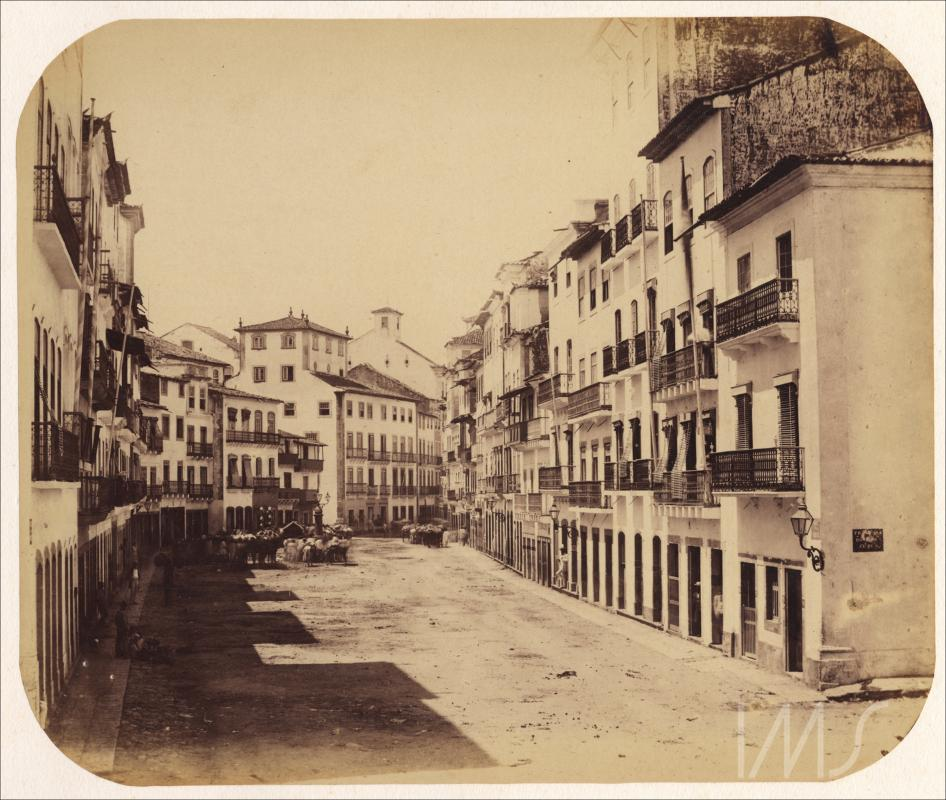
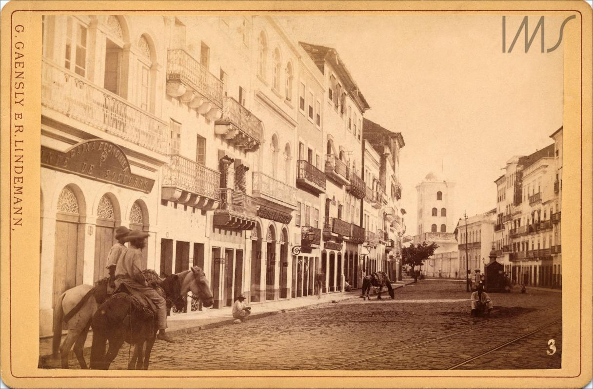
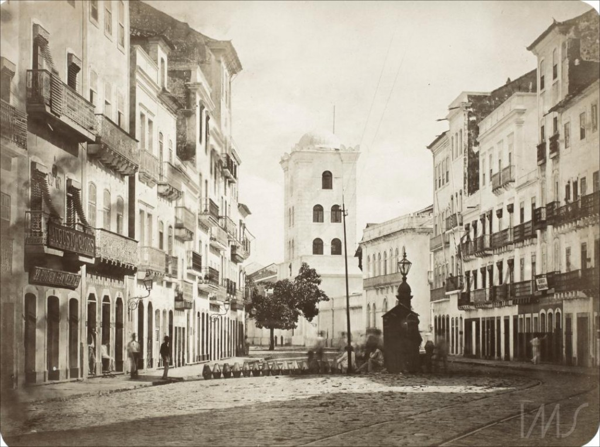
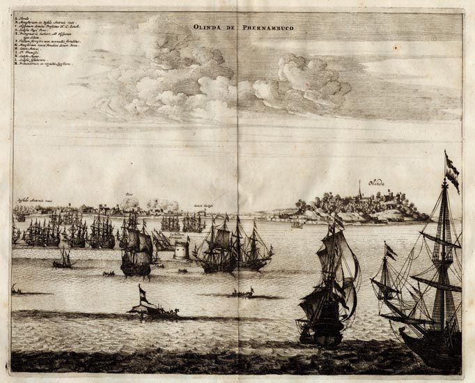
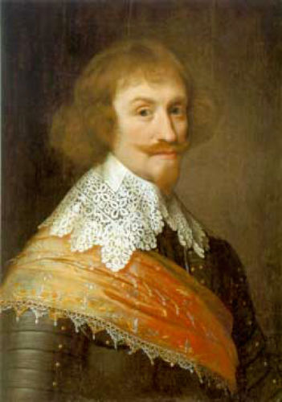
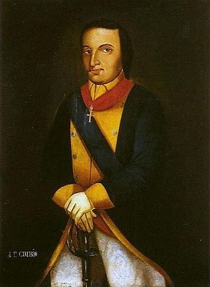
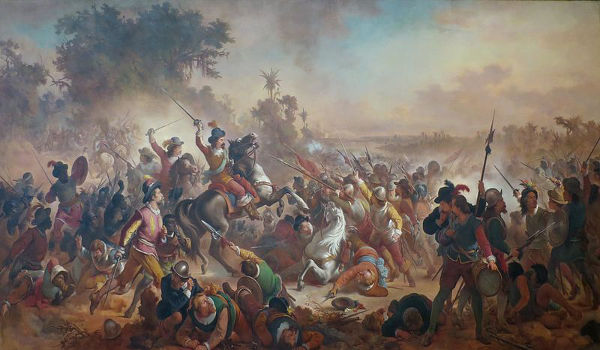
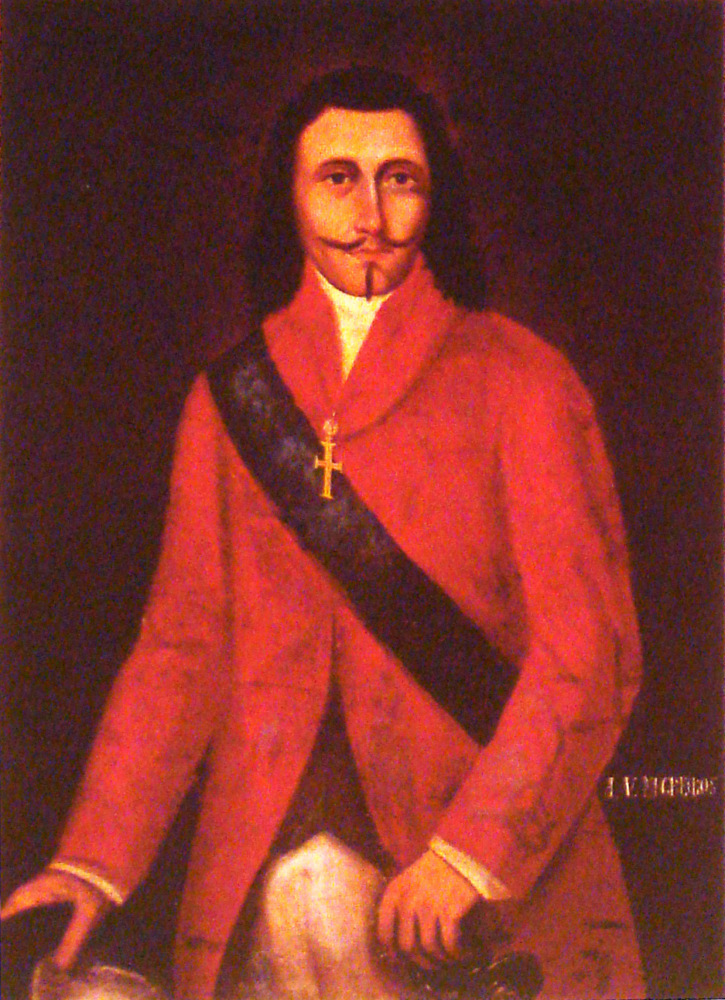
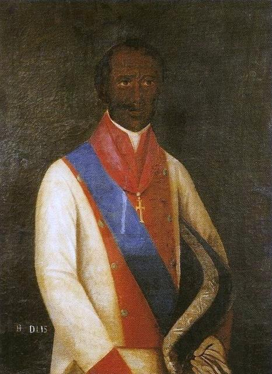
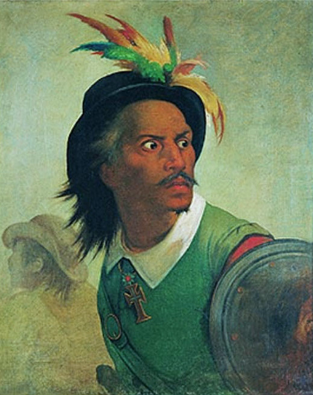

Foto mais antiga da rua do Bom Jesus, conhecida como Rua do Boden a época da ocupação holandesa. Ela era a rua mais movimentada do período.

Foto da rua do Bom Jesus, quando foi rebatizado com esse nome.

Foto mais recente da rua Bom Jesus tendo sido produzida por volta de 1890.

Pintura do Cerco Holandês no litoral de Olinda feito por John Ogilby

Pintura de Maurício de Nassau, um aristocrata e militar alemão que foi contratado para administrar a colônia holandesa no Nordeste brasileiro.

Pintura de Domingos Fernandes Calabar, um soldado português que se aliou a Holanda e foi responsável por grande parte das vitórias dos holandeses sobre os portugueses.

Pintura da Batalha de Guararapes que envolveu holandeses, portugueses e indígenas, entre 1648 e 1649, nos Montes Guararapes. Ela deu resultou no fim das Invasões Holandesas.

Pintura de André Vidal de Negreiros, um militar que foi Governador das Capitanias de Pernambuco, Maranhão, do Grão-Pará e foi líder na expulsão dos holandeses da Capitania de Pernambuco.

Pintura de Henrique Dias, um negro liberto e Mestre de Campo do Exército Português. Ele participou da Guerra de Guararapes, sendo ferido oito vezes em combate.

Pintura de Antônio Filipe Camarão, um militar e líder indígena brasileiro que auxiliou na reconquista de Recife e Olinda para Portugal.